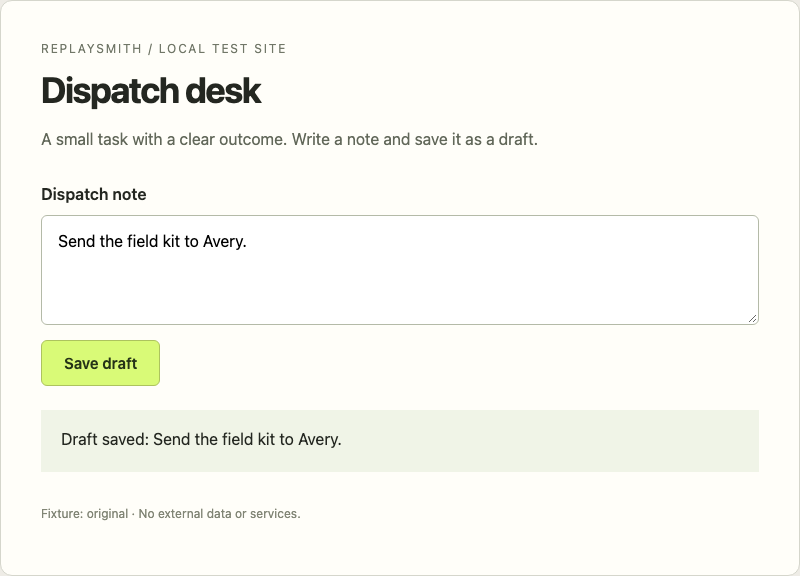
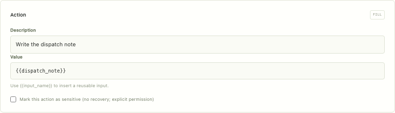
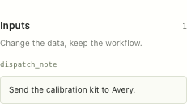
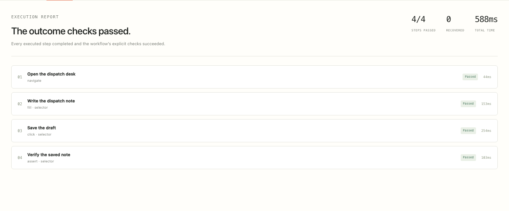
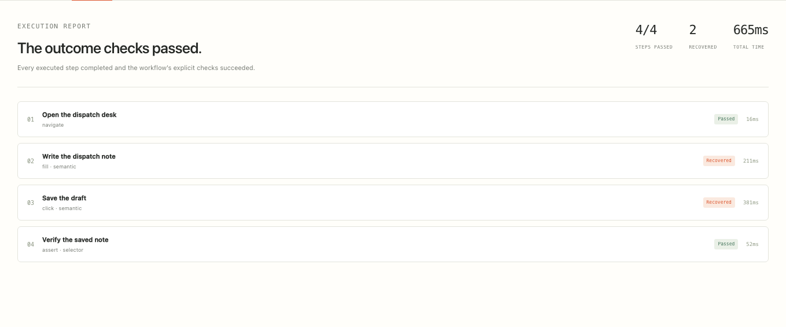
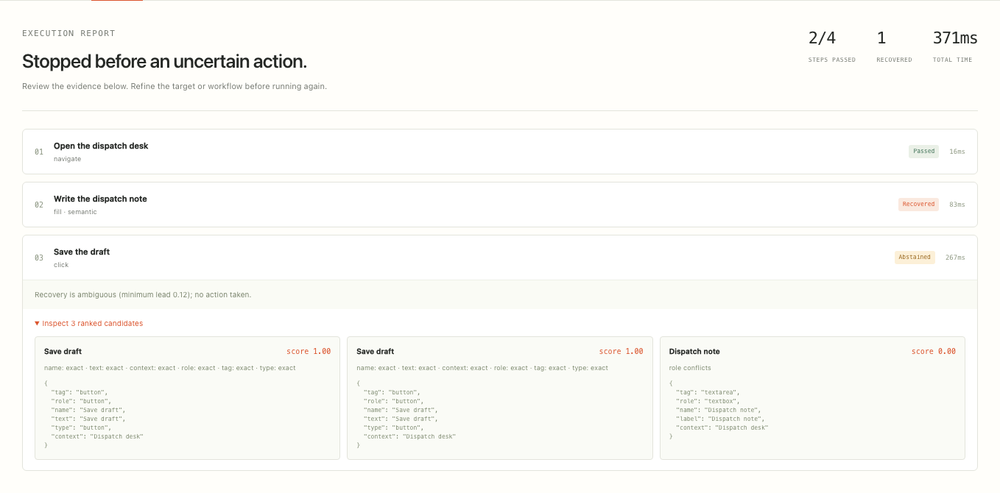
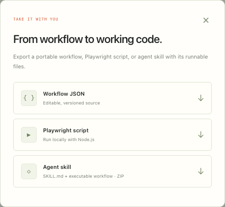

01DEMONSTRATE
Your task. Ready to repeat.
Actual local demonstration

02MAKE IT REUSABLE
Named inputs. Editable steps.
Imported from an actual recording


03VERIFY THE OUTCOME
Fresh browser. Final assertion.
✓Outcome verified.

04RECOVER WITH EVIDENCE
Then verify the result.
Fixture: recycled element ID

05ABSTAIN WHEN UNCERTAIN
Inspect the competing candidates.
Fixture: duplicate controls

06TAKE IT WITH YOU
Playwright code. Agent Skills.
github.com/nazeeh111/ReplaySmith ↗
